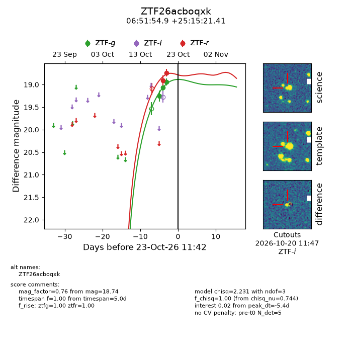
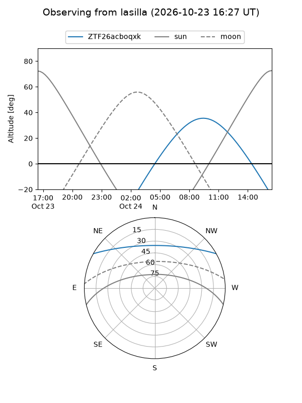
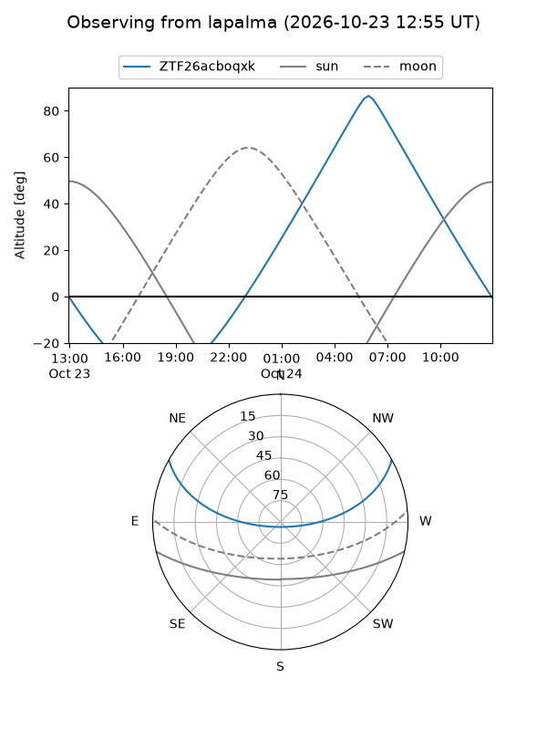
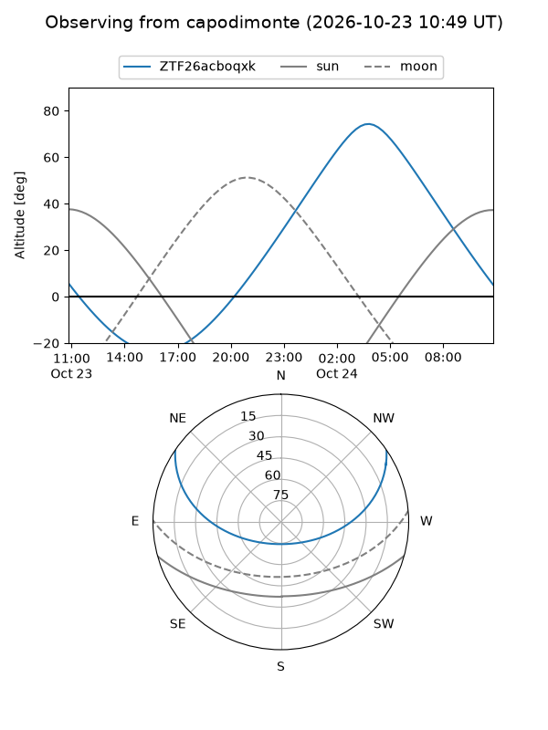
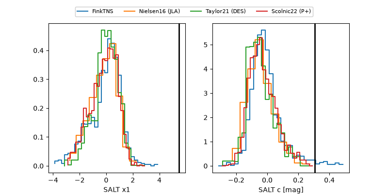

ZTF26acboqxk
Target ZTF26acboqxk at 2026-10-23 11:44
Aliases and brokers:
FINK-ZTF: ztf.fink-portal.org/ZTF26acboqxk
Lasair-ZTF: lasair-ztf.lsst.ac.uk/objects/ZTF26acboqxk
ALeRCE-ZTF: alerce.online/object/ZTF26acboqxk
Direct TNS query: direct search
alt names
ZTF26acboqxk (ztf,fink_ztf)
Coordinates:
equatorial (ra, dec) = 102.9789,+25.25595
equatorial (HMS+DMS) = 06:51:54.93,+25:15:21.41
galactic (l, b) = (190.2027,+11.31652)
Flags:
peak dt: -5.4
Photometry:
last ztfg=18.94, ztfr=18.74
3 ztfg, 2 ztfr detections
Lightcurve

Visibility



Additional plots
